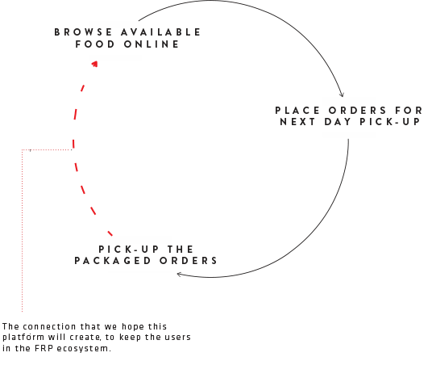
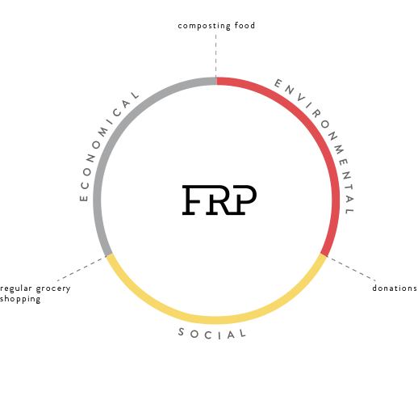

Food Repurposing Platform
Context
Created as a part of a senior experience design course, in a team of 5, over the span of 4 weeks.
Role
UX design, research + strategy, visual design, art direction.
The Food Repurposing Platform (FRP) is a service that sells food – specifically produce – from Safeway to local food organizations at a reduced price. This business-to-business relationship creates daily access to quality, edible produce that would otherwise go to compost.
Turning food waste into value
Every day, grocery stores in Canada throw away 8.5 million dollars worth of food, much of which is still edible, but not marketable. Keeping in mind that they are spending money and resources on produce they are just throwing away daily.
Currently, Safeway’s food is divided into sellable food, compost, and a small amount of donations. Using the proposed system, Safeway workers would sort that food currently going to compost into two categories: compost and ‘b-grade’ edible produce. The ‘b-grade’ edible produce is then sold using the FRP to local businesses and organizations at a reduced price. This turns what is framed as "food waste", to value for people who can use it.
In service touchpoints infographic

The digital experience
Despite the B2B nature of the platform, we wanted to create a delightful web experience that can reel in further engagement for the FRP’s audience, rather than following the traditional utilitarian approach.
I encouraged my team to keep the aesthetics minimal and strip away irrelevant details, focusing on making the key interactions as elegant as possible to guide the user. As an example, layered panels are implemented to orient the user intuitively throughout the ordering process. This interaction also invokes a sense of depth and shows a logical continuity between the steps in the journey. Below is the evolution of this design pattern, from its wireframe state, to an interactive prototype.
Grounding the design in real world scenarios
One of my teammates and I filmed this short documentary on some of our conversations with potential FRP customers during the user research stage of our project. This film frames the issue of food waste, and highlights the need and potential for such a platform to exist.
Placing the human need at the center of the design process
We looked to existing food waste solutions for inspiration in the beginning of our process and realized that most of these solutions consider two of the environmental, economical, and social factors. However, the FRP considers all three in a holistic way, and places the human need for affordable food at the center of the design, keeping long-term effects in mind. To me, the most interesting thing about this UX project was that we went through a deep process of research, strategy, and concepting and all the digital design work came into play at the very end of our process, where there was a need for it, rather than focusing on that aspect from the beginning. 
Sector wide implication
FRP has the potential to be scaled up to more grocery stores and more departments such as bakeries. If it were to be implemented by Safeway, they would own a platform that they started, making them a sector-wide leader in ethics and in profit.
FRP can promote brand identity and awareness, much like Oceanwise has done for sustainable seafood. Individual customers can seek out businesses that repurpose food, and organizations will want to be part of a brand community associated with the aspirational value of reducing waste.